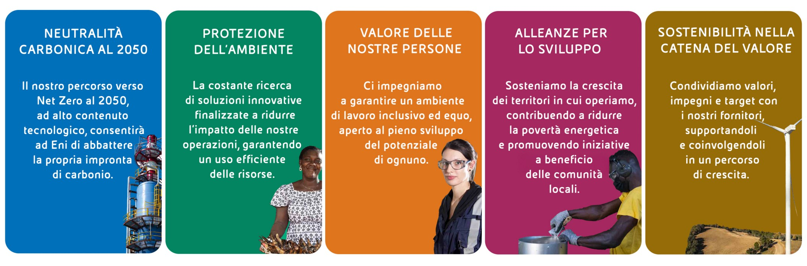

Eni e il settore primario
Eni è un’impresa energetica integrata che opera lungo l’intera catena del valore dell’energia, includendo attività riconducibili al settore primario quali l’esplorazione, l’estrazione e la gestione delle risorse naturali. L’analisi del Report di Sostenibilità “Eni for 2024” evidenzia come tali attività siano inserite in una strategia complessiva orientata alla transizione energetica, nella quale la riduzione dell’impatto ambientale delle operazioni industriali rappresenta un elemento centrale.
Attività industriali e sostenibilità
Il Report di Sostenibilità Eni for 2024 analizza il rapporto tra le attività industriali dell’azienda e i contesti ambientali e sociali in cui essa opera, con particolare attenzione alla tutela degli ecosistemi, al monitoraggio ambientale e alla gestione sostenibile delle risorse naturali.

Sostenibilità e catena del valore
Un elemento centrale del Report di Sostenibilità è rappresentato dall’approccio adottato lungo l’intera catena del valore. L’azienda promuove l’integrazione di criteri ambientali e sociali nei processi produttivi e di approvvigionamento, coinvolgendo fornitori e partner in un percorso condiviso di crescita sostenibile.